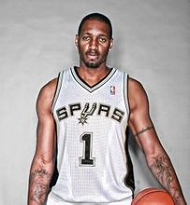

多伦多猛龙队1997-2000

奥兰多魔术队2000-2004

休斯顿火箭队2004-2009
圣安东尼奥马刺队2013

4月2日讯 麦蒂已经正式入选2017年名人堂，与他一起入选的还有前公牛总经理杰里-克劳斯，不过前火箭主帅汤姆贾诺维奇和传奇球星克里斯-韦伯最终落选，令人颇感可惜。恭喜！麦蒂正式入选2017名人堂 传奇生涯获认可。
 麦迪的职业生涯一直被烙上了一个大大的问号，究其原因，伤病成为了最大阻碍。但是尽管如此，天赋惊人的麦迪在短短几年的巅峰期内依然荣誉等身，七次入选全明星、7次入选NBA最佳阵容、两次得分王以及2000-01赛季进步最快球员奖，列举完了麦迪的荣誉之后我们再看看他在常规赛与季后赛中的数据情况
麦迪的职业生涯一直被烙上了一个大大的问号，究其原因，伤病成为了最大阻碍。但是尽管如此，天赋惊人的麦迪在短短几年的巅峰期内依然荣誉等身，七次入选全明星、7次入选NBA最佳阵容、两次得分王以及2000-01赛季进步最快球员奖，列举完了麦迪的荣誉之后我们再看看他在常规赛与季后赛中的数据情况
麦迪生涯中最能打动人的莫过于他在受伤前那段近乎无敌的统治时期，健康的麦迪在球场上的表现无疑是名人堂级别的。在他起初为多伦多猛龙效力的三个赛季中，麦迪就表现出了异于常人的能力，他和兄弟卡特组成的双枪几乎攻无不破。在离开猛龙后，麦迪用之后八年的强势表现证明，只有这样的球员才配成为NBA历史上的最佳小前锋。
巅峰时期的麦迪曾与科比并肩，当时对于二人谁才是NBA最强得分手的争论从未停息，可是其效率与战绩确实是麦迪竞选的一大黑点，不过麦迪的情况并不是第一次出现，名人堂球员米奇·理奇蒙德的生涯概况与麦迪十分相似。理奇蒙德于2014年加入名人堂，在他11年的职业生涯中场均贡献21分3.9篮板3.5助攻，他总共六次入选全明星，五次NBA最佳阵容并获得最佳新秀奖项。理奇蒙德共有三次进入季后赛，最后一次也仅是作为湖人队的饮水机管理员作壁上观。再例如克里斯·穆林（5次全明星、4次最佳阵容）、伯纳德·金（4次全明星、4次最佳阵容，2次打进季后赛第二轮 ），这两位名人堂球员的履历也并不比麦迪优秀。
最后祝贺麦迪入选名人堂，另一位陪我度过青春的球场杀手。